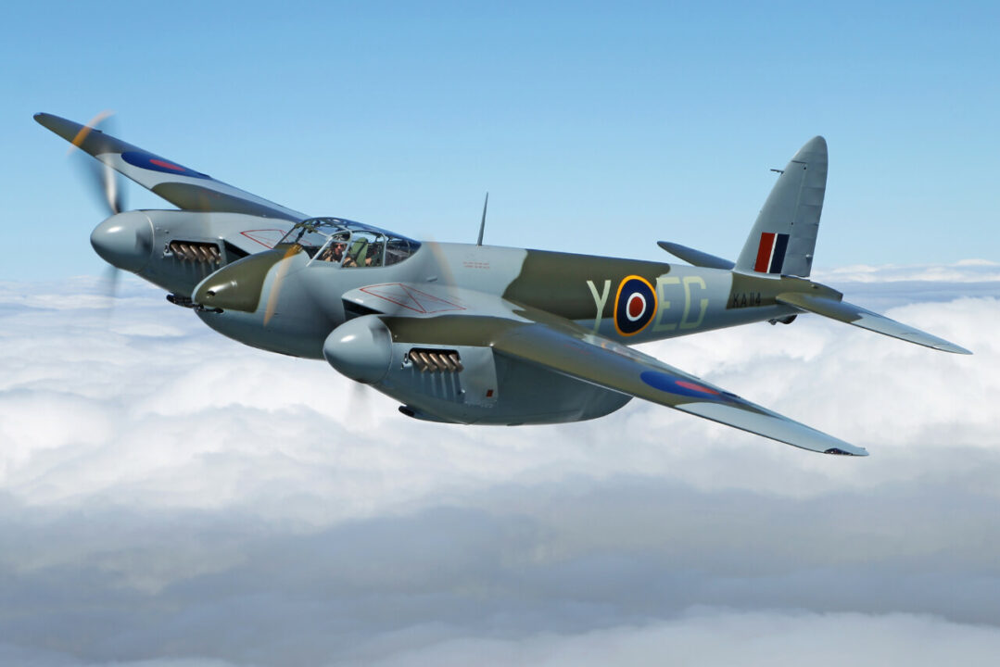
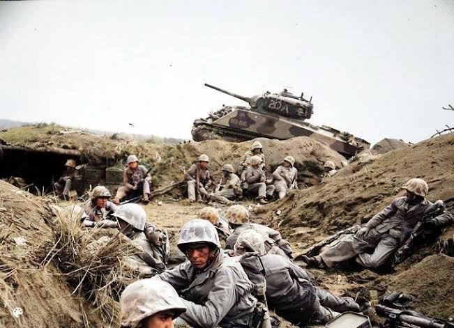

CRÔNICAS DA SEGUNDA GUERRA MUNDIAL
Antigas histórias que o tempo esqueceu
Sempre muito pouco!
Max Guedj
Fogo, Gelo e Glória: A Última Missão do
Wing Commander "Max Maurice"!

Como é bom voltar para casa
O amargo retorno do campo de batalha
